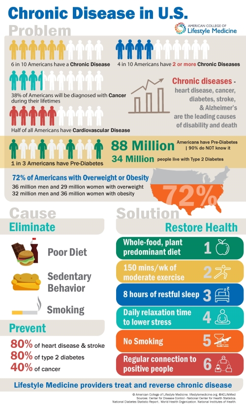
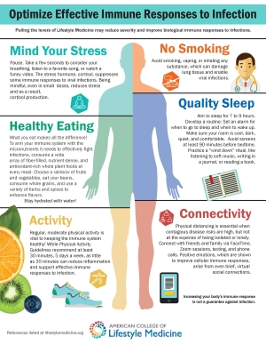
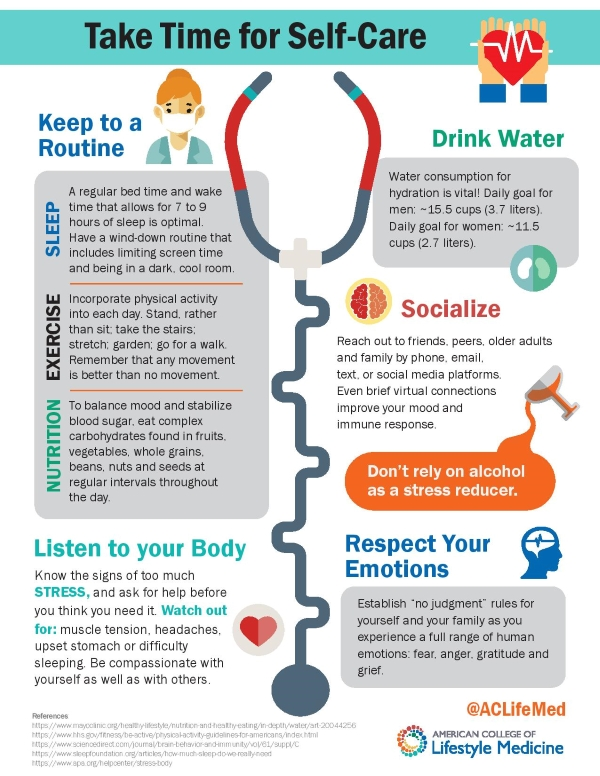

Connecting the dots between epidemic levels of chronic conditions, the lifestyle factors that contribute to
the
increasing problem, and the solution that lifestyle medicine presents.
This graphic is a tool for helping understand the basic mission of LM providers - to eradicate chronic
disease by
treating the root causes.
Take Time for self care
Centers for Disease Control and Prevention
This single page handout offers easy steps to practicing all six Lifestyle Medicine pillars. Share this
graphic with
your entire team, peers, and family members.
Available in multiple languages
English
Spanish
Portuguese
.
New Patient Resource
Our intention is to provide you with practical, useful information



Many of us are looking for ways to support the immunity of ourselves and our children. This resource page is
full of
advice for helping families practice the six pillars of optimal health together.
Connecting the dots between epidemic levels of chronic conditions, the lifestyle factors that contribute to
the
increasing problem, and the solution that lifestyle medicine presents.
This graphic is a tool for helping understand the basic mission of LM providers - to eradicate chronic
disease by
treating the root causes.
This single page handout offers information on how the 6 domains of Lifestyle Medicine help support immune
response.
A reference list is also available for download.
This single page handout offers easy steps to practicing all six Lifestyle Medicine pillars. Share this
graphic with
your entire team, peers, and family members.